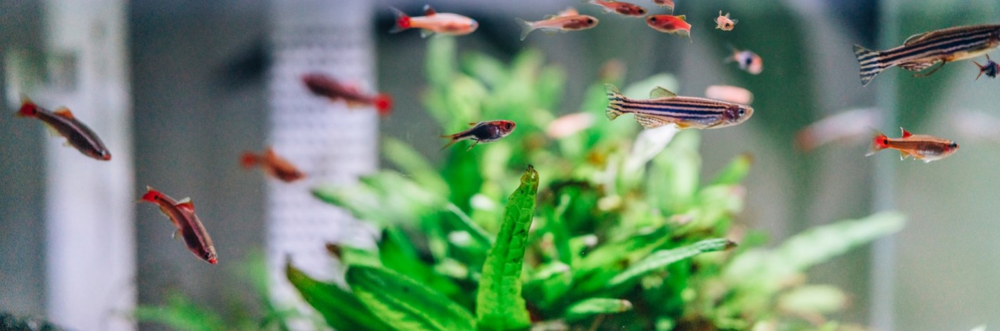
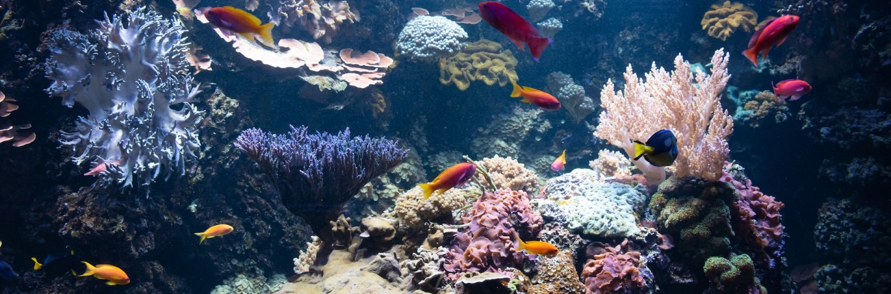

Discover the World of Fishkeeping.
Fish represent a broad class of aquatic animals that can live in fresh or saltwater, depending on the species. Bringing fish into your home can be an exciting hobby, especially if you intend to breed them, and the presence of a fish tank in your home can induce feelings of peace and tranquility.
Aquarium Maintenance
Whether you are bringing your fish home for the first time or maintaining your aquarium, it is important to test your water once per week to ensure it is free from toxins that can harm your fish.
Regularly using a water testing kit is the simplest method to monitor aquarium water. Maintain the balance by checking for ammonia, nitrite, nitrate, and pH levels. A quality filter will help manage these compounds effectively.
Ammonia
Ammonia stands as the primary threat to fish, originating from fish waste and leftover food, marking the initial phase of the tank's nitrogen cycle. Whether freshwater or saltwater, maintaining an ammonia level of 0.0ppm is crucial to prevent toxicity to fish. If levels rise, treat the water with an ammonia removal product.
Nitrite
Nitrites constitute the subsequent phase in the nitrogen cycle, formed when natural tank bacteria break down ammonia. Similar to ammonia, nitrites should ideally measure at 0.0ppm to prevent toxicity. Employ a water conditioner to manage elevated nitrite levels during the cycle effectively.
Nitrate
Nitrates arise from the breakdown of nitrites and, while not immediately hazardous to fish, high concentrations can induce stress in the tank's inhabitants. In freshwater tanks, aim for nitrate levels below 40ppm. Acceptable levels vary in saltwater ecosystems but tend to be lower. Utilizing suitable filter media and conducting routine water changes effectively maintains lower nitrate levels in the aquarium.
pH
Optimal pH levels differ based on the fish species in your aquarium. Freshwater fish typically thrive in a pH range of 6.5 to 7.5, whereas saltwater fish prefer more alkaline water, with a pH above 8. Using a pH alert sensor helps determine when adjustments like pH down or pH up are necessary to maintain the appropriate pH level for your fish.
Freshwater Fish
There are several freshwater fish to choose from when setting up your aquarium, but it is best to consult with a “Pexpert” to ensure your fish will get along and have similar needs! No matter the species, ensure your fish are suited for a freshwater environment by investing in a water testing kit.
Different fish may need different water parameters to be healthy. These general water chemistry guidelines will help you get started:
- pH Level: 6.8 to 7.6 (7.0 is considered neutral)
- Ammonia level: anything above zero is harmful
- Nitrites: less than 0.5 ppm
- Nitrates: 5 to 10 ppm
Be sure to research the specific fish to ensure they will adapt well to your aquarium and avoid ingesting toxins that can harm or kill them. For more information on making your tap water safe for your fish, please visit:
Saltwater Fish
Saltwater fish also offer several options when it comes to choosing among species for your aquarium. As with freshwater fish, consult with a “Pexpert” and invest in a water testing kit. to ensure your fish will get along and are suited for a saltwater environment.
Following these general guidelines will help you to avoid dangerous water conditions and ensure the appropriate salinity level for your fishies:
- Salinity: 1.020 to 1.028 sg
- pH Level: 7.6 to 8.4 (7.0 is considered neutral)
- Ammonia: any level above 0.1 ppm requires attention
- Nitrites: less than 0.2 ppm
- Nitrates: 10 to 40 ppm
Be sure to research the specific fish to ensure they will adapt well to your aquarium and avoid ingesting toxins that can harm or kill them. For more information on making your tap water safe for your fish, please visit: